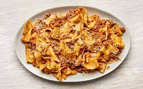

Bolognese

Description
a sauce made with ground beef, onions, tomatoes and fresh herbs, and served with pasta.
It's an Italian meat sauce that originated from the city of Bologna.
Ingredients
- 1 Tbsp olive oil
- 1 brown onion, finely chopped
- 1 carrot, peeled
- 1 clerey stick, trimmed, finely chopped
- 2 garlic cloves, finely chopped
- 500g beef mince
- 2x 400gm cans diced tomatoes
- 1/2cup water
- 500g tagliatelle pasta
Method
-
Heat oil in a large saucepan over medium-high heat. Cook onion, carrot, celery and garlic, stirring, for 5 minutes or
until softened. Add mince. Cook, breaking up with a wooden spoon, for 6 to 8 minutes or until browned.
-
Add tomatoes and 1/2 cup cold water. Bring to the boil.
Reduce heat to low. Simmer, uncovered, for 20 to 30 minutes or until thick. Season with salt and pepper.
-
Meanwhile, cook pasta in a large saucepan of boiling, salted water, following packet directions,
until tender. Drain.
-
Divide pasta among serving bowls. Spoon over sauce. Serve topped with cheese and fresh basil.
Home